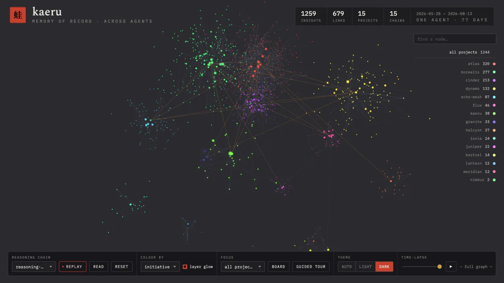
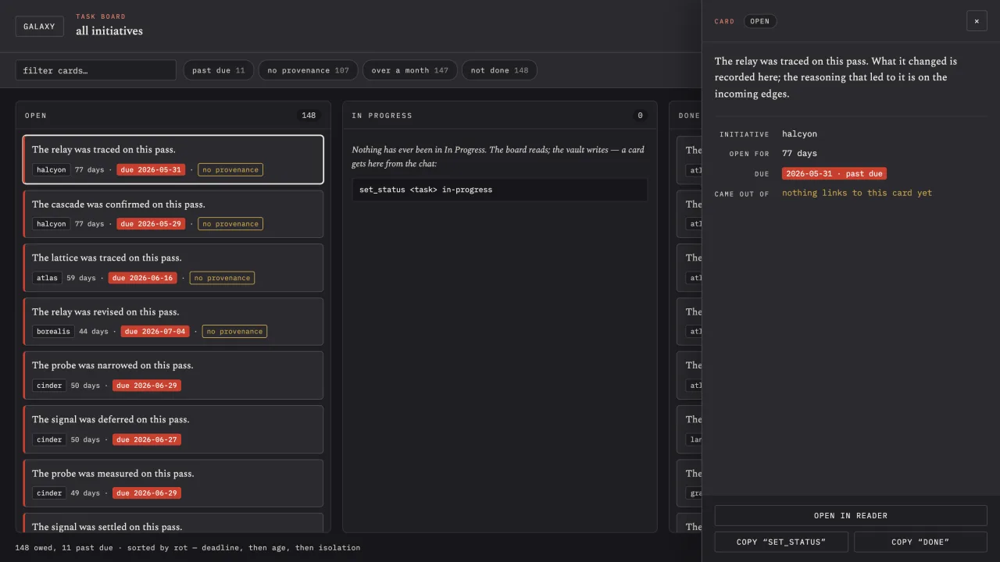
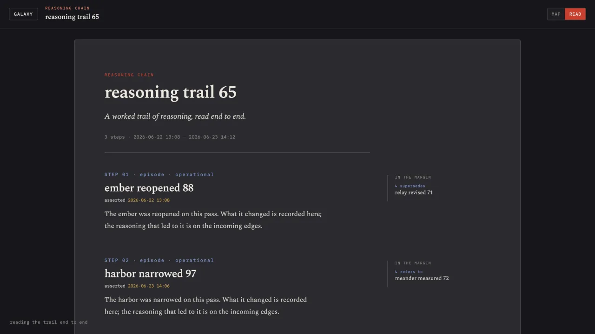

Lamantin AI
Lamantin AI
kaeru
Cognitive memory for LLM agents — local-first, and shareable across a team through the cloud.



An agent that returns, recalls, and reshapes.
Most agents forget everything between sessions. kaeru gives them a typed property graph to think in: episodes and hypotheses while the work is live, settled outcomes and references once it isn't. Open a project and the agent knows what was being thought about, can follow the provenance of a decision, and can pull in what the rest of the team has shared.
The name is 蛙 — kaeru, "frog", a homophone of 帰る "to return" and 変える "to change".
It is a facilitator, not an enforcer. The curator API offers around forty primitives as available tools; the agent and the person decide when to reach for them. The daemon hints, and never blocks.
- Two tiers A working graph for active thinking and an archival one for settled knowledge — the hippocampus and cortex split, with an explicit, logged promotion between them.
- Bi-temporal Assertion and retraction history is native to the substrate. Read any node as it is now or as of a past moment; a conflict invalidates the old version rather than deleting it.
- Reasoning chains The load-bearing path between two nodes saved as a recallable trail — the "why", not just the "what".
- Local-first A single binary with an embedded CozoDB substrate. No server, no network — until you opt into a shared cloud tier for the team.
Talking to it.
kaeru speaks the Model Context Protocol, so any MCP-capable agent picks up the whole verb set. There is also a rig adapter for agents that embed the store in-process.
# the re-entry ritual, once a project is open initiatives awake --initiative myproject overview --initiative myproject # capture, then connect — # an unlinked node is an island episode "stand is green after the rollback" link "stand is green…" "rollback decision" chain "first symptom" "rollback decision"